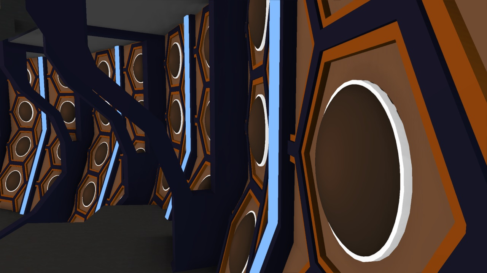

MinecraftVisuals
MinecraftVisuals is a 15 year old animator who has a passion for Doctor Who.
Predominantly works on custom title sequences and other small animations (most if not all related to Doctor Who) and is currently in the process of modelling a custom Tardis rig.
